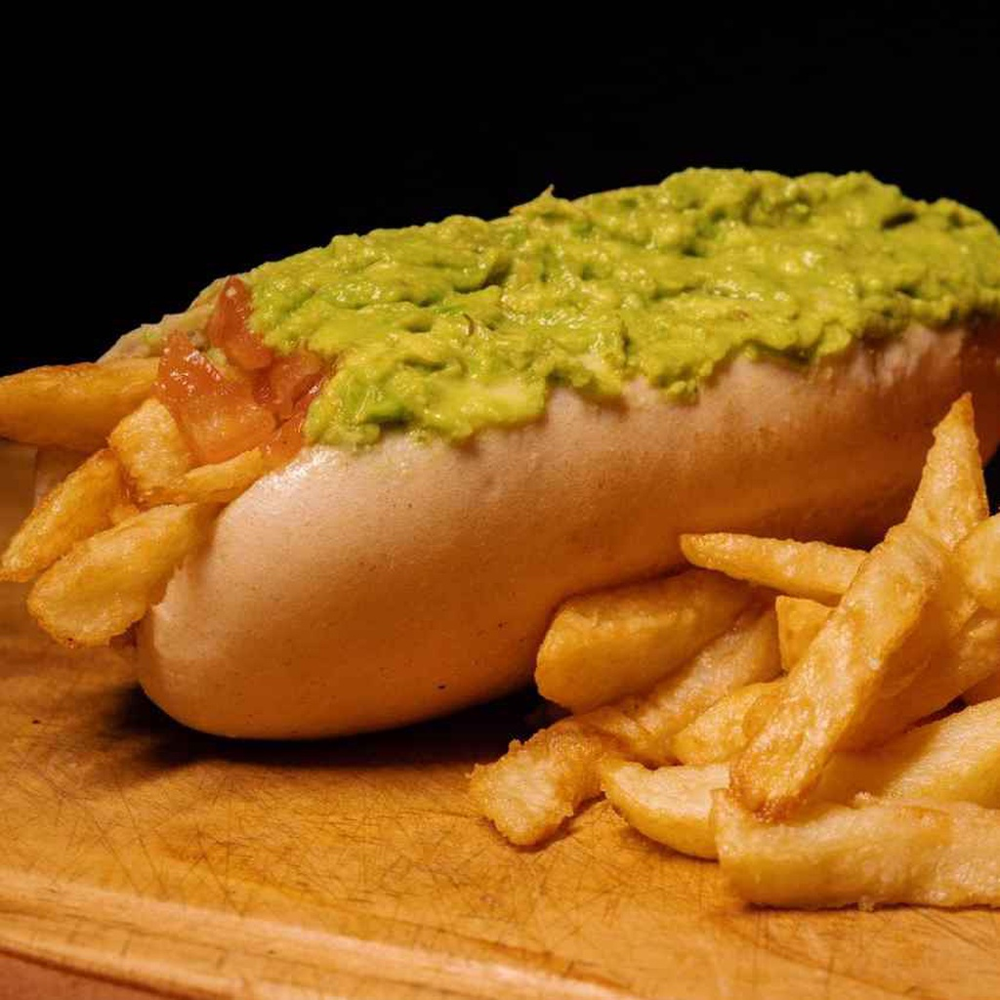

Hot to make a papapleto

A papapleto (Source: Link El Palenke )
Ingredients
- Hot dog bread
- Avocados
- Tomatoes
- Mayonnaise
- Fries (you can make it yourself or buy them)
- Ketchup, Mustard or any dressing you love
Preparation
- Make the fries by chopping potatoes and fry them in a pan or if you bought them pre-fried you can do this in a oven, air-frier or how you like them the most.
- Cut the tomatoes in little cubes.
- Make an avocado paste (make sure that the avocados are ripe).
- Put the bread in a oven for less than 5 minutes, just to heat them nicely
- To make a papapleto just open the bread, put the fries in the bottom, add tomato and avocado paste.
- Over that you can add mayo, Ketchup, Mustard or any dressing you like.
- Enjoy!